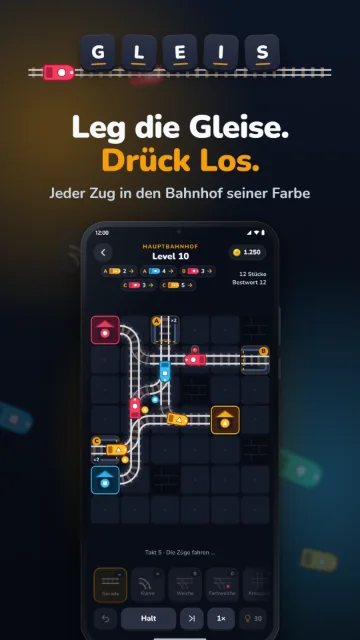
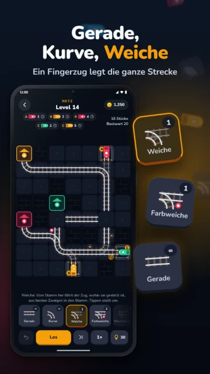
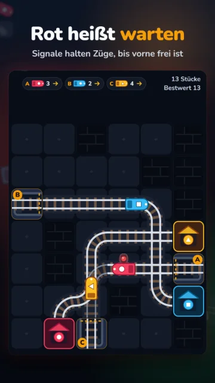
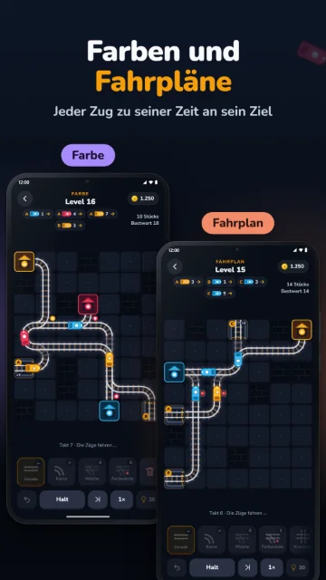
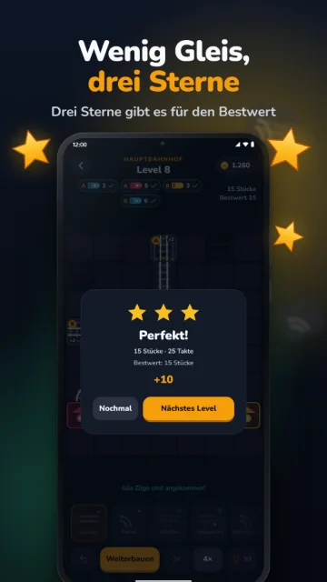
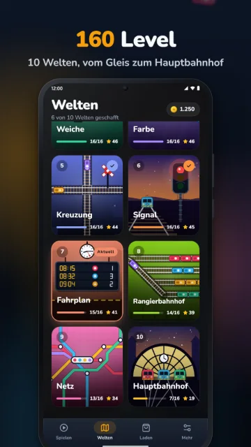
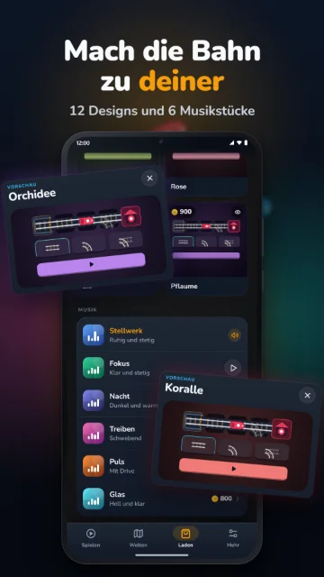

Eisenbahn-Rätsel
GLEIS
„Leg die Gleise. Stell die Weichen. Jeder Zug kommt an.“
Am Rand stehen Depots mit ihrem Fahrplan, auf dem Feld warten Bahnhöfe in den Farben der Züge. Dazwischen legst du die Strecke: Geraden, Kurven, Weichen und Signale. Dann drückst du Los, und alle Züge fahren gleichzeitig, Takt für Takt. Jeder muss in den Bahnhof seiner Farbe, ohne zu entgleisen und ohne Zusammenstoß.
- Bald bei Google Play
- Bald im App Store


Screenshots aus der aktuellen Version von GLEIS
Video
GLEIS in Bewegung
So geht’s
Legen, stellen, losfahren
-
Gleise legen
Wähl ein Stück aus der Werkbank und tipp aufs Feld, oder zieh mit dem Finger eine ganze Strecke vom Depot zum Bahnhof.
-
Weichen stellen
Tippen dreht ein Stück oder stellt eine Weiche um. Farbweichen schicken Züge nach ihrer Farbe, Signale lassen sie warten.
-
Los drücken
Alle Züge fahren nach ihrem Fahrplan, Takt für Takt. Kommt jeder in seinem Bahnhof an, mit wenig Gleis, gibt es drei Sterne.
Bilder
Ein Blick ins Spiel
Zum Weiterblättern wischen oder scrollen.







Bilder aus dem Store-Eintrag von GLEIS, aufgenommen in der aktuellen Version
Auf einen Blick
GLEIS in Zahlen
- 10Welten
- 160Level
- 7Gleisstücke
- 0Zeitdruck
- Zehn Welten, vom ersten Gleis über Weiche, Kreuzung und Signal bis zum Hauptbahnhof mit bis zu sechs Zügen.
- Sieben Gleisstücke: Gerade, Kurve, Kreuzung, Weiche, Farbweiche, Wechselweiche und Signal.
- Ein Fingerzug legt eine ganze Strecke, die Kurven entstehen von selbst.
- Ein Bestwert pro Level, von einem Löser geprüft: Mit so wenig Gleis wie möglich gibt es drei Sterne.
- Kein Glück, kein Zeitdruck: Die Züge fahren erst, wenn du Los drückst, und jedes Mal genau gleich.
Welten
10 Welten mit je 16 Leveln
- GleisVon A nach B
- KurveUm die Ecke
- WeicheLinks oder rechts
- FarbeJeder Zug sein Bahnhof
- KreuzungQuer durch
- SignalHalt und weiter
- FahrplanAlles zu seiner Zeit
- RangierbahnhofSortieren
- NetzViele Linien
- HauptbahnhofDer große Knoten
Mehr von Riddlewerk